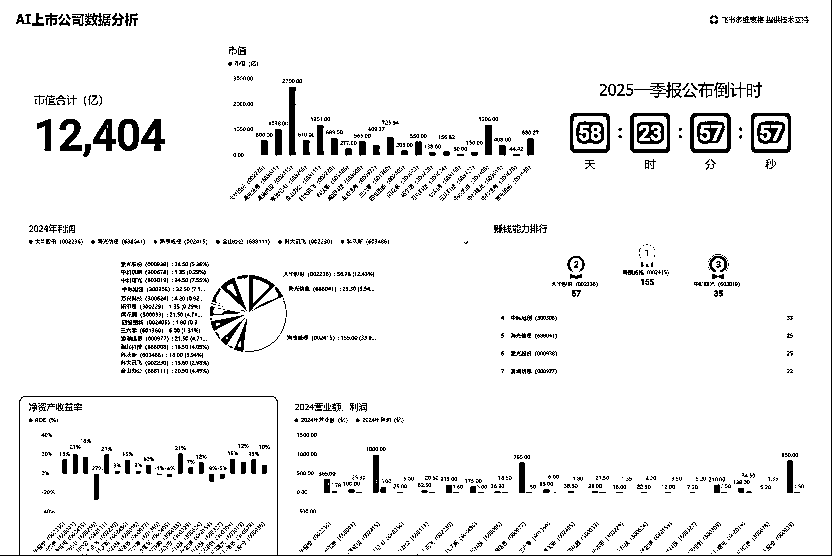

来源：https://sqc3lds24ql.feishu.cn/docx/YOF0dvSuHoMda0xDIOmcomtfncc
生财社区的朋友大家好，今天分享一些关于飞书多维表格结合Deepseek的用法，请看下文！
飞书多维表格太强大了，为什么DeepSeek、Kimi这样的头部AI公司，都在用飞书？连这些企业都用上了，那飞书，一定值得你一试。
飞书多维表格是什么？别人会告诉你，飞书多维表格是一个集表格、数据库、项目管理工具于一体的协作平台。
用大白话来说就是“升级版的Excel+简易数据库+团队协作工具”。
别人会告诉你，飞书多维表格，可以调动多个DeepSeek为你批量写文章，提高生产率。
但这，并不是今天要说的重点。
坦率地说，看了很多篇介绍飞书多维表格的文章和视频，包括飞书官方的教程，但还是不会用，发挥不出它的强大功能。
没办法，只能自己摸索，毕竟，别人都给你开发出来了，学会使用，这还能难住你？
摸索了三天，发现一些新功能，与各位伙伴分享。保姆级详细教程，文章很长，内容很多，字字手打，真诚奉献，最后一个功能超级强大，请君耐心看！
https://www.feishu.cn/
打开飞书官网，选择“多维表格”，进入到大家熟悉的表格界面，然后，你的无限探索就开始了。
你可能觉得，就这，要实现这功能，有必要去折腾，还搞什么多维表格，一个DeepSeek不就搞定了？
不不不，不一样，你可以召唤无数个豆包+无数个DeepSeek+无数个其他AI工具同时为你免费服务。具体看示例：
注：第一列可选择的“字段类型”有限，但往后的每一列可选的字段类型是完整的。
注：字段捷径中心里面有近百款模型，满足不同功能，以后使用可根据实际需求选取。
这个步骤很关键，目的是指定我们刚刚调用的豆包模型来干什么。
几秒钟过后，AI自动根据图片，帮你分析出该小姐姐的性格特征，我用的是我朋友的头像，看看这结果，简直不要太准，我都笑出声来了！
等待一会儿，批量的祝福词就出来了，看结果：
全程也就几分钟，结果全部展现。
整个过程，你需要填写的，只是很少一部分内容，其他的，都交给AI。
这只是个特定的例子，大家掌握了使用方法，可以无限展开你的想象空间，你还想分析什么？写指令就好了，谈恋爱，表白信息什么的，一键搞定啊！
以后，妈妈还会谈心你谈恋爱不成功？
当然，用途很多，不光能谈恋爱，比如学生管理、客户分析、员工管理等，都可以一键搞定，充分发挥你的想象力，赶紧去探索吧！
注：不用手动输入，直接问AI，把内容复制过来，或者直接让AI以表格输出，然后将表格导入进多维表格即可。都AI时代了，还搞什么手动输入啊。
具体过程同上，不再展现详细过程。
看看结果：
还支持图片批量下载。
当然，说实话，图片生成质量很一般，这跟多维表格没关系，跟DeepSeek也没关系，是图片生成模型的问题。
但是，如果有一天，飞书把自家字节系的即梦加入进去，从技术层面上来，这没有任何难度。那时，那质量，可就是指数级的提高了。
所以，大家要先知道用法，有这么个功能。
想想是不是太强了，以后，你负责提方向，然后该钓鱼钓鱼、该爬山爬山，一群AI在为你工作，你只用直接拿结果就行。
哎，魔幻的世界啊！
用飞书多维表格“仪表盘”创建十万级别数据可视化看板。关键信息都由AI整理，不用手工汇总。
3个小步骤，具体方法同上：
（1）用DeepSeek整理20家国内最具发展潜力的AI上市公司；
（2）将DeepSeek整理的信息导入多维表格；
（3）调用DeepSeek根据公司名称整理上市公司主营业务、市值、营业额、利润、净资产收益率（ROE）；
方法同上，具体过程不再展示，所有内容皆由DeepSeek整理并输出，隐藏了部分思考过程。
（4）将输出文本结果字段改为：数字，因为文本不可用于计算结果。
这时，便可以创建自定义的仪表盘，你想展示什么内容，以何种方式展现。
（1）在横轴和纵轴选择想要展示的内容，确定；
（2）添加你想要的其他组件。过程同上，不再详细展示；
（3）拖动组件大小和位置。
这样，一份最赚钱的AI上市公司动态数据展示图就出来了，来，看结果：

还是那句话，真的太强大了，并且以上展示的所有功能都免费使用。
以上只是部分功能展示，伙伴们，我们试想一下其他场景，小公司、工作室，哪怕一个个体户，完全可以免费搭建自己的经营数据动态看板。
善于思考的你可能又要质疑，就这，WPS不轻松搞定么？
不不不，
其一：以上所有展示都是动态的，鼠标到哪，数据精准展现到哪，一旦原始表格数据更新，所有仪表盘计算结果随着更新；
其二：飞书多维表格还整合了自家的表单功能，所有数据，可以生成表单，你指定的人填了表单内容，仪表盘便可以实时更新数据。
当然，如果要想实现：指定的人员根据权限来查看或者更改原始数据内容，那得开通付费版。
作为普通用户，上述免费功能，够用了。
搁以前，这样一套动态数据系统搭建，没有几万块，怎么可能出得来。
现在，免费让你用。
AI的进化速度太快了，老一代的工具还没学会使用，新产品又出来了。
写到这，说实话，后背阵阵寒意，担忧、恐惧、焦虑感油然而生。
以后，事情都被AI和会用AI的人干了，那不会使用AI工具的人，究竟干什么，真的躺着等国家向机器人收税来发救济金么？
还是乐观点吧，说点积极的，过度焦虑没有意义。
飞书多维表格，一并融入了近百款实用工具，自家的飞书本来就已经很强大，现在DeepSeek+各种工具融合，别人都开发出来了，你，连使用都觉得麻烦么？
以上展示，只是部分功能，多维表格的更多功能，大家一起来探索。
不管你是管理者还是普通执行层，如果能熟练掌握这些工具，用于解决现实问题，当别人还在死磕office、WPS时，你已经能用多维表格向老板呈现精美动态数据。
想想，你不升职加薪，难道老板会给AI加薪么。
而这，不也是一种AI变现的方式！